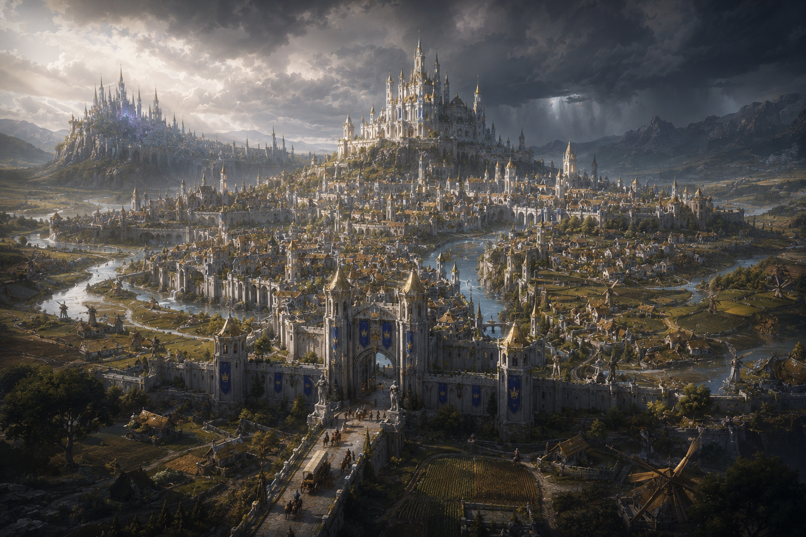

Previously On

Session III
The Road
Beyond Valemere
The party's first real journey begins beyond the city gates, where a broken carriage, hungry wolves, and a winged owlbear turn the road to Stardust and Slag into something far more dangerous than expected.
Last Session Recap
The Road Beyond Valemere
The Party
Character Select
Six adventurers. One journey. Select a character to view their public profile.
Current Objective
Quest Board
Known assignments and objectives currently being pursued by the party.
Campaign Chronicle
Session Archive
Every chapter of the party's story, preserved in order.